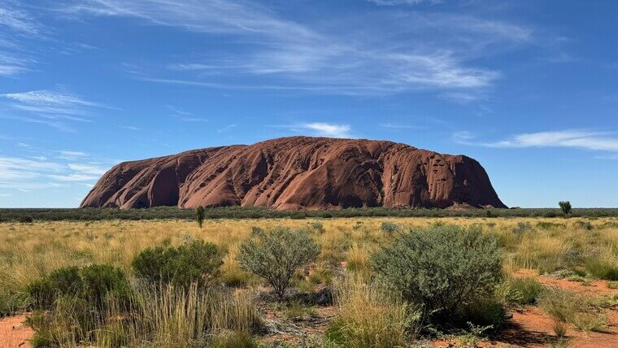
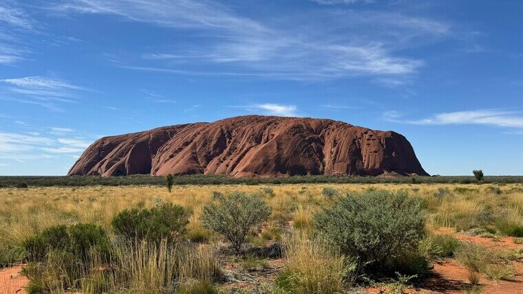

Description
Western Australia tourism offers breathtaking landscapes, vibrant cities, and unique wildlife experiences. Highlights include the stunning Ningaloo Reef, where visitors can swim with whale sharks, and the iconic Pinnacles Desert, home to ancient limestone formations. Perth, the state's capital, boasts beautiful beaches, Kings Park, and the lively Elizabeth Quay. The Margaret River region is famous for its world-class wineries and surf beaches. Nature lovers can explore Karijini National Park's gorges and waterfalls or witness the dramatic coastline of Esperance and Lucky Bay. The rugged Kimberley region, with its spectacular Bungle Bungles and Horizontal Falls, offers incredible outback adventures.
Things to do in Australia
Western Australia offers a diverse range of experiences, from stunning coastlines to rugged outback adventures. Visit Perth, the vibrant capital, and explore Kings Park, Elizabeth Quay, and Cottesloe Beach. Swim with whale sharks at Ningaloo Reef, or relax on the pristine shores of Turquoise Bay. Discover the unique limestone formations of the Pinnacles Desert and go wine tasting in Margaret River, known for its world-class wineries. Explore the dramatic landscapes of Karijini National Park, or take a scenic flight over the Bungle Bungles in the Kimberley. With its stunning beaches, national parks, and rich cultural heritage, Western Australia is a paradise for adventure and nature lovers.
Best local food to try in Australia
Western Australia's local food scene is a delicious mix of fresh seafood, premium meats, and world-class wines. A must-try is Western Rock Lobster, freshly caught and often grilled to perfection. Barramundi, a flavorful local fish, is another seafood favorite. The Meat Pie, a classic Aussie snack, is a must-try at bakeries across the state. For something uniquely Western Australian, enjoy Tiger Prawns from Exmouth or Marron, a freshwater crayfish from the southwest. Pair your meal with fine wines from the Margaret River region or a locally brewed craft beer. For dessert, try a slice of Pavlova, a meringue-based treat topped with fresh fruit.
Right time to visit Australia
The best time to visit Western Australia depends on the region and activities you're planning. The southwest, including Perth and Margaret River, is best visited from September to April, when the weather is warm and ideal for beaches, wine tours, and outdoor adventures.
Wildflower season from September to November transforms the landscape into a colorful paradise.
For Ningaloo Reef and whale shark swimming, the best time is from March to July.
The Kimberley region, known for its waterfalls and rugged landscapes, is best explored during the dry season from May to October, when temperatures are pleasant. Whether for beaches, wildlife, or outback adventures, Western Australia offers great experiences year-round.
Gallery
 
